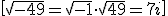
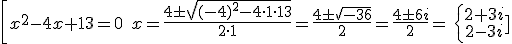
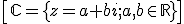
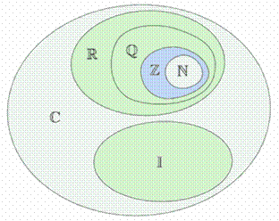

Números complejos
Números complejos
Hay situaciones en las cuales los números reales no son suficientes, por ejemplo cuando resolvemos una ecuación de 2º grado y nos topamos con la raíz de un número negativo.
Para resolverlas, definimos la unidad imaginaria “i” como el número que cumple que
i2 = -1 o i =√-1.
Ahora podemos resolver raíces de números negativos:

O resolver ecuaciones de segundo grado:

Entonces el conjunto de los números complejos se define:

Ejemplos: 2-7i, 3+πi, -20i, 157’28-i, 1428
Entonces tenemos estos conjuntos de números:

Verdadero o falso
Decide si son ciertas o no las siguientes afirmaciones:
Retroalimentación
Verdadero
Retroalimentación
Falso
Retroalimentación
Verdadero
Retroalimentación
Falso
Obra publicada con Licencia Creative Commons Reconocimiento No comercial Compartir igual 3.0